图 36.1 从马勃菌表面的孔中喷出来的孢子 真菌组成了一个独特的异养生物王国。和细菌一样，它们也是重要的分解者和致病生物。
在所有生存地球上的千奇百怪的生物中，可能最特别的、与我们人类差别最大的就是真菌了（图 36.1）。蘑菇和毒蕈属于真菌，它们是多细胞生物，生长速度非常快，以至于好像是一夜之间就从我们的草坪里冒了出来。一眼看去，蘑菇像从土里长出来的一种有趣的植物。然而，如果你再仔细观察，就会发现真菌其实和植物没有任何共同点，除了它们都是多细胞生物，都长在地上。正如你将看到的那样，你越研究真菌，它们就显得越非同寻常。
真菌是一类特殊的生物，已知大约有 77 000 种（图 36.2）。研究真菌的科学家——真菌学家 (mycologist) 认为，可能存在比已命名的种类多得多的种类，多达 120 万种。尽管真菌通常被包括在植物界中，但它们没有叶绿素，和植物的相似之处只在于它们的外型和不能移动的特性。真菌和植物之间的重要区别如下所述。
(1) 真菌是异养生物 (heterotroph)：很明显，蘑菇不是绿色的。几乎所有的植物都能进行光合作用，而真菌没有叶绿素，也不能进行光合作用。真菌通过分泌消化酶，然后吸取被消化酶分解的有机分子来取得食物。
(2) 真菌体呈丝状：真菌在生长状态下通常是丝状的（也就是说，它们的菌体由细长的菌丝构成），这些菌丝可能折叠起来形成诸如蘑菇之类的复杂结构。与之相反，植物是由好几种组合形成组织和器官的细胞构成的。
(3) 真菌有独特的生殖方式：有些植物能产生有鞭毛的游动精子，而真菌不能。绝大多数真菌通过核交换来进行有性生殖，而不是通过配子。
(4) 真菌的细胞壁由几丁质构成：真菌的细胞壁是由多糖（多条糖链）和几丁质——同样也是蟹壳的组成物质——构成的。植物的细胞壁是由纤维素 (cellulose) 构成的，这也是一种很坚固的组成材料。
(5) 真菌能进行核有丝分裂：真菌的有丝分裂和植物以及大多数其他真核生物的有丝分裂有一个重要的区别：真菌的核膜并不是被破坏然后再重新形成，而是核在内发生有丝分裂。纺锤丝在那里形成，把染色体拉到核的两极（而不是像大多数其他的真核生物那样，拉到细胞的两极）。
你可以列出一个比这长得多的清单，不过问题已经很清楚了：真菌根本不同于植物！它们的许多独特的特征强有力地证明了真菌和任何其他的生物都没有密切的亲缘关系。DNA 研究也证明，真菌和其他真核生物有很大的区别。
真菌大多以细长的丝状体形式存在，这种丝被称为菌丝 (hyphae)，用肉眼几乎看不见。这些菌丝通常是由许多条排成链的细胞构成的。这些细胞首尾相连，彼此间以隔膜 (septa) 互相隔开。
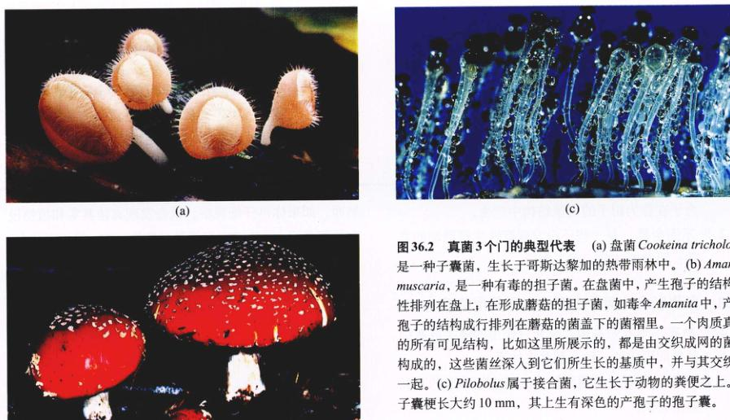图 36.2 真菌3个门的典型代表 (a) 盘菌 Cookeina tricholoma 是一种子囊菌，生长于哥斯达黎加的热带雨林中。(b) Amanita muscaria，是一种有毒的担子菌。在担子菌中，产生孢子的结构线性排列在盘上，在形成蘑菇的担子菌，如毒伞 Amanita 中，产生孢子的结构成行排列在蘑菇盖下面的菌褶里。一个肉质真菌的所有可见结构，比如这里所展示的，都是由交织成网的菌丝构成的，这些菌丝深入到它们所生长的基质中，并与其交织在一起。(c) Pilobolus 属于接合菌，它生长于动物的粪便之上。孢子囊梗长约 10 mm，其上生有深色的产孢子的孢子囊。
除非是用来隔离产生生殖细胞，隔膜很少形成完全的壁垒。胞质能穿过隔膜上的孔（图 36.3），在整个菌丝中自由地流动。因为这种流动，整个菌丝合成的蛋白质能够被运到正在不断生长的菌丝末端。因此，当食物和水很充足，温度也处于最佳状态时，真菌的菌丝生长速度非常快。
许多丝相互联系，就构成了菌丝体 (mycelium, 复数 mycelia)。这个词和“真菌学家” (mycologist) 都起源于希腊语中的真菌 “myketos”。真菌的菌丝体（图 36.4）构成了一个系统，它总共可能有数米长。这种菌丝体的菌丝深入到营养物中，在真菌和环境之间形成一种独特的联系。这种真菌所有的组成部分都有代谢活性，它们持续地与土壤、木头或菌丝体赖以生长的其他物质发生着相互作用。
在三类真菌中有两类，其由交织的菌丝形成的生殖构造是在生活史的特定阶段产生的，比如蘑菇、马勃 (puffballs)、羊肚菌 (morels)。这些构造由于菌丝的快速伸展而迅速地扩散。因此，蘑菇能突然间出现在你的草坪上。
真菌的细胞壁是由多糖 (polysaccharide) 和几丁质组成的，不像植物和许多种类的原生生物那样由纤维素组成。几丁质同样也是组成节肢动物坚硬的壳或外骨骼 (exoskeleton) 的主要成分。节肢动物是一类包括昆虫和甲壳类的动物（详见第46章）。正是由于真菌和动物体内共同存在着几丁质，科学家们认为几丁质是真菌和动物具有共同祖先的特征之一。
真菌的有丝分裂不同于其他大多数生物。由于细胞彼此相连，相应的繁殖单位不是细胞本身，而是细胞核。在有丝分裂过程中，核膜并不分解而后重新形成，而是在核膜内形成纺锤体。所有的真菌都没有中心粒 (centriole)，在有丝分裂过程中，通过一个叫微纺锤斑 (spindle plaque) 的相对无定形的小结构来调节微管的形成。这些独特的性质强有力地表明，真菌起源于某些尚不为人所知的具有以上这些特征的单细胞真核生物类群。
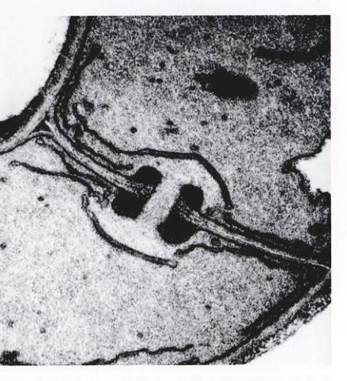图 36.3 隔膜 (45 000 ×) 担子菌，Inonotus tomentosus，从菌丝的横切面电镜照片中，可以看到隔膜上的孔，胞质能从中流过。
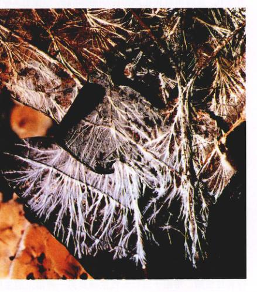图 36.4 真菌的菌丝体 这种由菌丝构成的菌丝体生长在马里兰的森林地被物的树叶上。
真菌既能进行有性生殖，也能进行无性生殖 (asexual reproduction)。当真菌采取有性生殖方式时，它会形成一个二倍体的合子 (zygote)，就像动物和植物一样。和动植物不同的是，所有的真菌细胞核，除去合子外，都是单倍体，在真菌菌丝体里共同的细胞质中有许多单倍体的细胞核。当真菌进行有性生殖时，两个具有不同基因交配型的菌丝彼此靠近并融合。在真菌的3个门中，有2个门真菌的菌丝融合后，胞质中的不同基因型的细胞核并不马上彼此结合，而是在真菌生活史的大部分时间里采取两类细胞核共存的形式。包含有两个基因型不同的个体的细胞核的真菌菌丝称为异型核的 (heterokaryotic) 菌丝；如果所有细胞核的基因都彼此相似，这种菌丝就称为同型核的 (homokaryotic) 菌丝。如果在菌丝的每一个隔室中有两个不同的细胞核，就是双核的 (dikaryotic) 菌丝，如果在每一个隔室只有这一个细胞核，就是单核的 (monokaryotic) 菌丝。双核菌丝有二倍体的某些基因特征，因为两套基因组都被转录。这些特征对于认识、了解个体的生活史有重要的作用。
真菌菌丝中的细胞质通常能穿过有孔的隔膜流动，若菌丝没有隔膜，则自由流动。但生殖结构却完全不同。当生殖结构形成时，它们被完整的隔膜隔开，这些隔膜没有穿孔，或者虽有孔，但不久将被堵塞。真菌有3种可能的生殖结构：①孢子囊 (sporangia)，参与孢子形成；②配子囊 (gametangia)，在其内部产生配子；③分生孢子梗 (conidiophores)，一种能产生多核无性孢子——分生孢子 (conidia) ——的结构。
孢子是真菌常用的生殖手段。它们可因有性或无性过程产生。通常不能运动，靠风来传播。当孢子落在一个适宜的地方时，它们开始萌发生长，产生新的真菌菌丝。由于孢子非常小，它们能在空气中悬浮很长一段时间。正因如此，真菌孢子可以被吹到远离它们的出生地很远的地方，这也是多种真菌分布极其广泛的原因之一。不幸的是，许多能引发动植物疾病的真菌也因此而能得到迅速广泛的传播。还有一些真菌的孢子通常通过昆虫和其他小动物来传播。
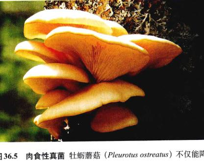图 36.5 肉食性真菌 牡蛎蘑菇 (Pleurotus ostreatus) 不仅降解木头，还能捕捉线虫，并以之为氮源。
所有的真菌都通过体外消化来获取食物：它们向周围环境中分泌消化酶，然后把通过这种体外消化 (external digestion) 而产生的有机分子吸收回体内。真菌菌体构造的重要性也由这种吸收方法体现了出来——由菌丝组成的广泛网络为吸收提供了巨大的表面积。许多真菌能够降解木头中的纤维素，它们打断葡萄糖单体间的连接键，然后吸收葡萄糖分子作为营养。这就是真菌经常生长在死树上的原因。
令人吃惊的是，有些真菌是捕食型的 (predatory)（图 36.5）。例如：一种食用的牡蛎蘑菇 Pleurotus ostreatus 的菌丝能分泌一种神经毒素，来麻痹以真菌为食的小线虫（详见第44章）。当这种虫变得行动迟缓时，真菌的菌丝就将其包裹并伸进其体内，吸收营养成分。真菌通常生长在活着的树干或古老的树桩上，利用酶消化木头中的纤维素以得到所需的大量葡萄糖。因此，它捕食线的行为显然主要作为氮来源。还有一些比 Pleurotus 更活跃的捕食者，它们能设陷阱诱捕猎物，甚至向动物——线虫、轮虫 (rotifers) 和其他小动物——发射“子弹”。
真菌和细菌是生物圈中的主要分解者。它们降解有机物质，使这些分子中含有的元素回到生态系统的循环
图 36.6 世界上最大的生物是什么 这里显示的是一种导致病真菌 Armillaria，加拿大蒙州的3个分散的针叶林区遭受此真菌侵害，侵害从中心向四周辐射，形成了图中环形克隆系。在图片底部的较大区域的直径将近 8 公里。迄今为止测量到的最大的克隆系直径为 15 公里，这对于一个单克隆系来说是很惊人的。
中去。真菌实际上是惟一能降解木头的主要成分——木质素的生物。通过降解这些物质，真菌将重要的“建筑材料”，如碳、氮和磷，从死去的生物体内释放出来，并被其他生物所利用。
为了降解有机物，有些真菌侵入活的动植物体内，摄取有机分子；而另外一些真菌以死的动植物为食物来源。因此，真菌也经常是动植物的致病生物（图 36.6），造成农业上每年数十亿美元的损失。真菌不仅对活的植物产生很大的危害，还在食品收获和贮藏时对其产生危害。另外，真菌还经常分泌一些物质到所侵害的食物中，使这些食物变味，甚至有致癌性或毒性。
这种强有力的代谢能力使真菌不仅有重要的生态意义，同时在商业上也有广泛用途。面包和啤酒的生产就是利用单细胞的真菌——酵母菌——能产生大量的酒精和二氧化碳的生化活性。奶酪和酒通过某些真菌的代谢过程而具有特殊的香味。还有一些真菌被用于酱油和其他发酵食品的生产中。许多工业生产利用培养基中的真菌生产柠檬酸。酵母目前还被用于大规模生产丰富动物食品营养的蛋白质。许多抗生素，包括第一种被广泛应用的抗生素——青霉素，都来源于真菌。
有些真菌还可以将一种复杂的有机分子转化成另一种，用于清除环境中的有毒物质。例如：至少有3种能与硒结合的真菌已被分离出来，它们将硒与无害的挥发性的化合物结合，从而除去土壤中过量的硒。位于加利福尼亚州 San Joaquin 山谷的圣路易斯 (San Luis) 国家野生动物保护区的土壤中就聚集了大量的硒。
两种类型的真菌与自养生物之间的互利共生关系有很重要的生态意义。地衣 (lichen) 是真菌和绿藻或蓝细菌之间形成的互利共生关系。它们几乎存在于世界的任何一个角落，尤其在特别恶劣的环境下，比如赤裸的岩石上。菌根 (mycorrhizae) 是植物的根与真菌形成的一种特殊的互利共生体系，大约 90% 的植物具有这种特性。在这两种类型的共生体系中，光合作用生成的有机物固定了大气中的二氧化碳，并为真菌提供有机物质。反过来，真菌的代谢活性则提高了共生体系在特殊环境下的生存能力。在菌根中，真菌能加速植物对重要的营养物质（如磷）的吸收。这两种互利共生关系将在本章稍后的部分里进一步讨论。
真菌分为3个门，但实际上有4个类群：接合菌门的接合菌 (zygomycete)、子囊菌门的子囊菌 (ascomycete)、担子菌门的担子菌 (basidiomycete) 和不完全菌 (imperfect fungi)（图 36.7 和表 36.1）。还有其他一些曾与真菌有关的类群，如黏菌 (slime mold) 和水霉 (卵菌门，详见第35章)，现在归为原生生物，而不是真菌。卵菌明显不同于真菌，主要表现在：①有活动的孢子；②富含纤维素的细胞壁；③有丝分裂的方式；④二倍体的菌丝。
真菌的3个门的区别主要在于它们的有性生殖结构。在接合菌中，菌丝融合后直接形成合子，合子萌发时进行减数分裂。在其他两类真菌中，双核菌丝的广泛生长导致了相互交织的菌丝结构形成，具有不同特征的不同的类群的生殖细胞就在这种菌丝结构中产生。随后，生殖细胞内发生核融合及随后的减数分裂。不完全菌究竟是无性生殖还是有性生殖，这一点还没弄清楚。
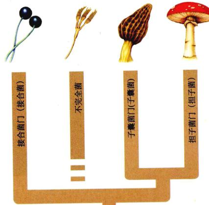图 36.7 真菌的4个主要类群 不完全菌不算真正的一门，而是那些还没有确定是否存在有性生殖结构的真菌的总称。
| 类别 | 典型代表 | 重要特征 | 现存种类的大致数目 |
|---|---|---|---|
| 子囊菌 | 酵母菌、块菌、羊肚菌 | 有性生殖方式，子囊孢子在子囊中形成。无性生殖也很常见 | 32 000 |
| 不完全菌 | 曲霉菌、青霉菌 | 尚未发现有性生殖；大多数被认为是失去了有性生殖能力的子囊菌 | 17 000 |
| 担子菌 | 蘑菇、毒蕈、锈菌 | 有性生殖方式，担孢子生长于被称为担子的棒状结构上，产生担孢子的顶端菌丝细胞被称为担子，偶尔也发生无性生殖 | 22 000 |
| 接合菌 | 黑根霉 (黑面包霉) | 有性或无性生殖方式；多核菌丝，没有隔膜，生殖结构除外，菌丝融合直接形成合子，在合子萌发前，发生减数分裂 | 1 050 |
接合菌门 (Zygomycota) 的接合菌的菌丝无隔膜，只有当它们形成孢子囊或配子囊时才有。目前，接合菌是3类真菌中数量最少的一类，已命名的约有 1050 种。包括较常见的一些面包霉（图 36.8a）和许多生长在腐烂有机物上的微型真菌。这类真菌由于在生命周期中能形成暂时处于休眠状态的接合孢子囊 (zygosporangia) 而命名。
在接合菌的生活史中（图 36.8b），有性生殖过程通过配子囊 (gametangia) 的融合而产生，配子囊中含有许多细胞核。配子囊通过完整的隔膜与菌丝隔开。这些配子囊可能在不同接合型的菌丝上形成，也可能在单个的菌丝上形成。如果在同一个克隆系中既有 “+” 接合菌株，也有 “-” 接合菌株，它们可能发生生殖细胞融合。单倍体细胞核一旦融合，就形成了二倍体合子细胞核，发生融合的区域通常形成一个庞大而精细的接合孢子囊。一个接合孢子囊可能包含一个或多个双倍体细胞核，并具有一个厚厚的外壳。这种接合孢子囊能够使物种在不适宜生存的环境中存活下来。减数分裂发生在接合孢子囊发育过程中。通常，这个过程只产生单倍体孢子发育成新的单倍体菌丝。除了合子细胞核，所有接合菌的细胞核都是单倍体。
在接合菌中，无性生殖比有性生殖更普遍。在无性生殖过程中，菌丝在面包表面或其他真菌以之为食的物质上生长，并形成成簇的直立的柄，即孢子囊柄 (sporangiophore)。孢子囊柄的顶端形成孢子囊 (sporangia)，被隔膜隔开，薄壁的单倍体孢子就在孢子囊中产生。因此，孢子分布于基质表面，便于被风携走，传播到一个新的食源地。
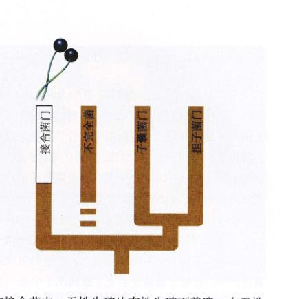图 36.8 黑根霉是一种生长在潮湿的面包或其他类似基质上的一种接合菌 (a) 能产生孢子的黑色球形孢子囊着生在大约 1 cm 高的菌丝顶端，并靠根状的菌丝固着。(b) 根霉的生活史。这类真菌以其特有的接合孢子囊而得名。
第二个真菌门——子囊菌门 (Ascomycota)，是较大的门，包含大约 32 000 个已命名的种类，而且每年还有更多的种类被发现。子囊菌中有人们非常熟悉和有重要经济价值的真菌，比如酵母菌、普通的霉菌、羊肚菌（图 36.9a, b）和块菌 (truffles) 等。这类真菌还包括许多严重的植物病原菌，比如造成栗子枯萎病的 Cryphonectria parasitica 和造成荷兰榆树病的 Ophiostoma ulmi。
子囊菌因其具有特征性的微小囊状生殖结构——子囊 (ascus, 复数 asci) ——而得名。合子细胞核就在子囊里产生，它是子囊菌生活史（图 36.9c）中惟一呈二倍体的细胞核。子囊在一个称为子囊果 (ascocarp) 的结构中发生分化。子囊果由紧密交织的菌丝构成，对应于羊肚菌或盘菌 (cup fungus) 的可见部分。
子囊菌中无性生殖非常普遍，通过产生分生孢子 (conidia, 单数 conidium) 的方式进行。分生孢子存在于特化的菌丝即分生孢子梗 (conidiophore) 的顶端，由隔膜隔开。分生孢子能够迅速地在新的营养源上繁殖。许多分生孢子是多核的。子囊菌的菌丝虽有隔膜隔开，但隔膜上有孔洞，胞质能在整个菌丝之间流动。隔开子囊和产生孢子的隔膜最初是有孔的，但后来被封闭了。
各个子囊菌菌丝细胞所含的细胞核数目不一，从几个到许多。菌丝是同型核或异型核菌丝。雌性配子囊被称为产囊体 (ascogonia)，它们都有一个叫做受精丝 (trichogyne) 的喙状突起。当精子器 (antheridium) 或雄性配子囊形成时，它与邻近的产囊体的受精丝融合。最初，两种类型的配子囊都含有许多细胞核。随后，精子器中的细胞核通过受精丝移到产囊体中，雌雄核配对排列。随后双核菌丝即在融合区域长出。在这种菌丝中，出现了代表两种不同原交配型的细胞核。因此，这些菌丝既是双核的，又是异型核的。
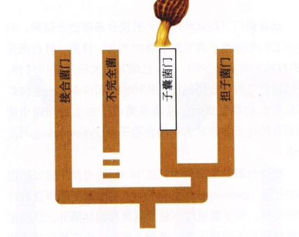图 36.9 子囊菌 (a) 羊肚菌 Morchella esculenta 是一种美味食用菌，它通常出现于早春时节。(b) 盘状真菌。(c) 子囊菌的生活史。合子在子囊中形成。
子囊产生于双核菌丝的顶端，并因隔膜的形成而被分隔开。每一个子囊中有两个单倍体细胞核，每一个代表双核菌丝的一种交配型。在每一个子囊中，两个细胞核发生融合，形成合子。每一个合子都立即开始减数分裂，形成 4 个单倍体子细胞核。子细胞核通常再进行一次有丝分裂，产生 8 个细胞核，进一步形成有壁的子囊孢子 (ascospore)。在许多子囊菌中，子囊成熟时膨胀，最后爆裂。破裂通常发生在最初形成的部位。这种爆裂能将子囊孢子抛出 30 cm 远的地方，与大多数孢子只为 20 μm 长相比，这个距离是很惊人的。这相当于把一个垒球（直径 7.5 cm）扔到 1.25 km 外——大约是一个本垒打距离的 10 倍！
酵母菌 (yeast) 是一种单细胞真菌，它是最有趣的、也是最有经济价值的微型真菌之一，通常属于子囊菌。酵母菌大多以裂殖 (cell fission) 或出芽的无性生殖方式进行繁殖。出芽就是在父细胞上生出一个较小的细胞（图 36.10）。
有时两个酵母菌会发生融合，形成一个含有两个细胞核的细胞。这种细胞来可能起子囊的作用，配子结合后即进行减数分裂。产生的子囊孢子将直接作为一个新的酵母细胞而起作用。
由于是单细胞生物，酵母菌曾被认为是最原始的真菌。然而，事实上它们是由多细胞的祖先演化而来的，只是结构发生了简化。而单词 “yeast” 实际上也只表示这些真菌是单细胞的。尽管酵母主要由子囊菌演化而来，但也还有些酵母菌来源于另类真菌。即使同样来源于子囊菌的酵母菌，彼此之间也不一定直接相关，反而像来自不同类群的子囊菌。
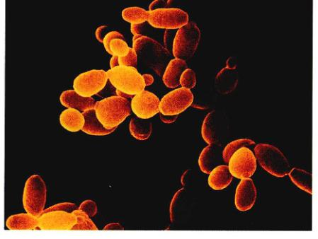图 36.10 一个酵母菌的扫描电镜照片，显示特殊的出芽方式的细胞分裂 (19 000 ×) 酵母细胞串在一起似链状，这种特征使人联想起单细胞酵母来源于多细胞的祖先。
酵母菌具有发酵碳水化合物，降解葡萄糖产生酒精和二氧化碳的能力，这是生产面包、啤酒和酒的基础。许多不同的酵母菌株被筛选出来，用于上述生产加工过程。野生酵母菌（一种自然出现在酿酒地方的真菌）曾经在酿酒方面起过重要的作用，而今天普遍使用的是经人工筛选培养的酵母菌。在这些加工过程中，最重要的足酿酒酵母 (Saccharomyces cerevisiae)。自文字记录以来，这种酵母菌就一直被人类所应用。有一些酵母菌是重要的病原菌，能导致诸如鹅口疮 (thrush) 和隐球菌病 (cryptococcosis) 等疾病的发生。念珠菌 (Candida) 就是其中一种，能引起常见的口腔或阴道感染。
在过去的几十年里，酵母菌在遗传学研究中也越来越重要。它们是第一个进行基因工程操作的真菌生物。作为真核细胞的研究模型，它们仍然发挥着重要作用。1983年，研究者通过化学方法装配 DNA 分子，在酿酒酵母菌中合成了一条有功能的人造染色体。这在其他任何真核生物中都还没有实现。1996年，完成了酿酒酵母的基因组测序。这是第一个被完整测序的真核生物。由于酵母菌繁殖迅速及遗传信息和生化信息的快速增加，酵母菌，尤其是酿酒酵母，已成为许多分子和细胞生物学家实验的最佳的候选真核生物细胞。在这方面，酵母菌已经可以与细菌中的大肠杆菌相提并论，并将为深入研究真核细胞系统的功能发挥重要的作用。
真菌的第三个门，担子菌门 (Basidiomycota)，包括大约 22 000 种已命名的种类，其中有一些是人们最熟悉的真菌。担子菌不但包括蘑菇、毒草（毒蘑菇）、马勃、木耳、层孔菌，还包括锈菌 (rust) 和黑粉菌 (smut) 等许多重要的植物致病菌（图 36.11）。许多蘑菇可以食用，但有些却有剧毒。
担子菌的命名来自于它们特殊的有性生殖结构——担子 (basidium, 复数 basidia)。担子呈球棒形。核配 (karyogamy) 发生在担子内，形成合子。合子是生活史中惟一的二倍体细胞（图 36.11b）。像所有的真菌一样，合子形成后立即进行减数分裂。在担子菌中，减数分裂产生的 4 个单倍体细胞共同形成担孢子 (basidiospore)。大多数担子菌的担孢子产生于担子末端的纤细突出部——担孢子梗 (sterigmata) 上。因此担子的结构与子囊不同，尽管两者的功能是一样的。记住，子囊菌的子囊孢子是在子囊中产生的。
孢子萌发后，担子菌的生活史进入到同型核菌丝的形成阶段。这些菌丝最开始没有隔膜，后来形成隔膜，将单核菌丝的细胞核分开。由单核菌丝构成的担子菌菌体被称为初级菌丝体 (primary mycelium)。不同性别的单核菌丝可以融合，形成一个双核的或次级菌丝体 (secondary mycelium)。这种菌丝体是异型核的，在两个隔膜之间有两个细胞核，分别代表两种不同性别。异型核菌丝体同时保留有两套基因组，这使其比一个单核的二倍体细胞具有更多的遗传可塑性。一套基因组可以补偿因另一套基因组突变而产生的不良后果。担子果 (basidiocarp)，或者叫蘑菇，是由次级菌丝体构成的。蘑菇菌盖底下的菌褶形成了大量的微小孢子。据估计，一个直径为 7.5 cm 菌盖的蘑菇每小时产生的孢子数多达 4000 万个。
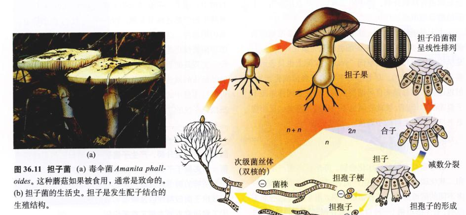图 36.11 担子菌 (a) 毒伞菌 Amanita phalloides。这种蘑菇如果被食用，通常是致命的。(b) 担子菌的生活史。担子是发生配子结合的生殖结构。
所谓的不完全菌 (imperfect fungi) 是一类大多数还没有发现有性生殖阶段的真菌，又称半知菌 (deuteromycetes)。这些真菌中的大多数显然与子囊菌关系较近，尽管它们与其他的类群也有明显的亲缘关系。衍生出特殊的无性菌株的真菌通常只由其菌丝和无性生殖的特征来确定。然而它不能按照那个类群的标准来分类，因为分类系统是建立在有性生殖相关特征的基础上的。这种系统造成的后果是：一旦一种不完全菌的有性生殖过程被发现，它可能在生活史的不同阶段拥有两个名字。
目前已记述的不完全菌大约有 17 000 种（图 36.12）。尽管不完全菌没有有性生殖活动，却有大量的基因重组发生。有时不同基因型的菌丝会自动发生融合，使得基因重组成为可能。在由这种融合产生的异型核菌丝中，可能发生一种被称为准性生殖 (parasexuality) 的特殊的基因重组。在准性生殖中，一个普通的菌丝中的不同基因型的细胞核交换部分染色体。这种重组也发生在其他真菌中，而且似乎是一些引起小麦锈病的新病原菌株产生的原因所在。
青霉 (Penicillium) 和曲霉 (Aspergillus) 都是重要的有经济意义的不完全菌。青霉属的有些种类是著名的抗生素——青霉素的来源，还有一些种类是羊乳干酪和软质乳酪中的特殊香味的来源。曲霉中的有些种类可用来发酵酱油和豆饼，在加工过程中，一些细菌和酵母也起着重要的作用。柠檬酸的商业化生产就是高酸性条件下由该属中的某些种类完成的。青霉属和曲霉属中都有一些种类产生子囊果，但由于子囊果只在很少几种真菌中偶然发现，所以这两个属仍然被初步归为不完全菌。大多数引起人的癣包括脚癣和癣菌病 (ringworm) 的真菌，也都属于不完全菌。
许多不完全菌在食物上广泛生长。生长在腐败食物上的镰刀霉 (Fusarium) 能产生高毒性的物质，如端孢菌毒素 (trichothecenes)。一些生长在玉米、花生等作物上的黄曲霉 (Aspergillus flavus) 菌株能产生黄曲霉毒素 (aflatoxin)，这是最易致癌的化合物之一。大多数发达国家对不同食物中允许含有的黄曲霉毒素的浓度有法律限制。
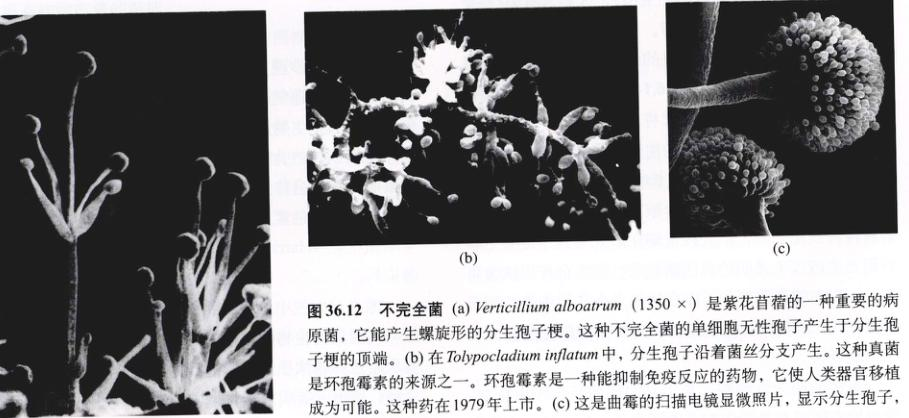图 36.12 不完全菌 (a) Verticillium alboatrum (1350 ×) 是紫花苜蓿的一种重要的病原菌，它能产生螺旋形的无性孢子梗。这种不完全菌的单细胞无性孢子产生于孢子梗的顶端。(b) 在 Tolypocladium inflatum 中，无性孢子沿着菌丝分叉产生。这种真菌是环孢霉素的来源之一。环孢霉素是一种能抑制免疫反应的药物，使人类器官移植成为可能。这种药在1979年上市。(c) 这是曲霉的扫描电镜显微照片，显示无性孢子，即菌丝顶端的小球。
地衣 (lichen)（图 36.13）是真菌和光合作用的同伴之间形成的共生体系。它们为互利共生——这样一种双方都受益的共生关系——提供了一个典型的例子。据估计，在现存的约 15 000 种地衣中，几乎所有的真菌部分都是子囊菌（也包括某些不完全菌），大约只有 20 种是担子菌，并且通常生长在热带。地衣可见的部分大多由真菌部分组成，但在真菌形成的组织当中有蓝细菌或绿藻存在，有时两者都有（图 36.14）。特化的真菌菌丝钻入这些光合细胞内，或用菌丝将其包裹起来，并直接获取营养。真菌发出的生化信号指导蓝细菌或绿藻部分合成一些它单独生长时不能合成的代谢物质。通常地衣中起光合作用的部分被固定在相互交织的厚厚的真菌菌丝层之间，不直接暴露在阳光下，不过有足够的阳光能透过半透明的真菌层，使光合作用成为可能。地衣的光合作用部分不能在缺乏光合作用细胞的情况下正常生长，同时真菌也保护光合作用细胞免受强光和干旱的侵害。
真菌的耐久性结构，加上其同伴的光合作用特性，使得地衣能够在最恶劣的条件下存活，如山顶、南极和北极地区以及沙漠中干旱裸露的岩石表面。在环境恶劣的地区，地衣通常是最早在其中生长的生物，它们分解岩石，为其他生物在此生长奠定基础。
地衣体内含有色素，显得颜色鲜艳。这种色素可能具有保护光合作用同伴免受太阳光损害的作用。从地衣中提取这些色素可以用作天然染料。苏格兰著名的海里斯粗花呢 (Harris tweed) 的传统制作工艺就用到了真菌染料。
地衣对大气中的污染物极度敏感，因此它们可以用作空气质量的生物探测器。它们的敏感性源于它们吸收溶于雨水和露水中的物质的能力。由于汽车交通和工业活动，城市及其周围难见地衣的踪迹，即使有适宜的基质存在。
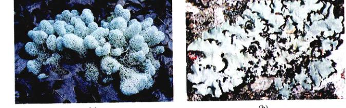图 36.13 地衣分布于多种多样的生境 (a) 一种枝状地衣，Cladina evansii，生长于佛罗里达土地上。(b) 一种叶状地衣，Parmotrema gardneri，生长在巴拿马山地森林的树干上。
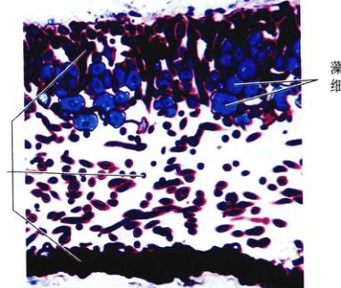图 36.14 地衣的切面染色图 (250 ×) 这一切面图显示，位于地衣顶层和底层，特别是底层的真菌菌丝（紫色）以更大的密度聚集是一个保护层。靠近地衣上表面的蓝色细胞为绿藻。这些细胞给真菌提供碳水化合物。
通常情况下，大约 90% 的维管植物的根与某些种类的真菌形成互利共生关系。据估计，这些真菌可能占全世界植物根的总重量的 15%。真菌与植物根的这种关系被称为菌根 (mycorrhizae)（源自希腊词“真菌”和“根”）。真菌在菌根中的作用类似于根的扩展。一方面，真菌菌丝明显增加了根与土壤接触的总吸收表面积，有助于磷、锌、铜和其他营养物从土壤中直接转运到根里；另一方面，植物向真菌提供有机碳源。因此这是个典型的互利共生的实例。
菌根有两种主要类型：内菌根 (endomycorrhizae) 和外菌根 (ectomycorrhizae)（图 36.15）。在内菌根中，真菌菌丝钻入植物根的外周细胞中，盘曲膨大，产生细小的分叉，同时菌丝也延伸到周围的土壤中。而在外菌根中，菌丝环绕着根细胞，不钻进根的细胞壁中。在这两种菌根中，菌丝体同样都深入延伸到土壤中。
目前，内菌根是两种菌根中较为普遍的一种。内菌根中的真菌部分是接合菌。已知全世界大约有 100 种接合菌能形成这种关系。这些接合菌种类虽然不多，却能与 20 多万种植物形成菌根。对内菌根的真菌部分正在进行深入研究，因为即使投入较低的磷和能量，它们也具有提高作物产量的潜能。
在最早的植物化石中，所显示的菌根通常属于内菌根。这种关系可能在植物“拓荒”过程中起了重要的作用。那时的土壤一定很贫瘠，而且完全缺乏有机物质。而能形成菌根的植物就可以在贫瘠的土壤中成功地存活下来。根据化石提供的证据，在最早期的植物中发现的菌根能帮助它们在那样的土壤中成功生长繁衍的观点似乎是合理的。而且今天幸存的最原始的维管植物也强烈地依赖于它们的菌根。
外菌根（图 36.15b）比内菌根所涉及的植物种类要少得多，可能只有几千种。它们通常是某些树或灌木的特征，尤其是那些生长在温带的种类，包括松树、杉树、橡树、山毛榉树和柳树。大多数外菌根的真菌部分是担子菌，但也有些是子囊菌。几种不同种类的外菌根真菌可以和一种植物形成菌根关系。不同的组合方式对植物的生理特征和在不同环境条件下的存活能力有不同的影响。至少有 5 000 种真菌能形成外菌根，但其中许多真菌只能与一种植物形成外菌根。
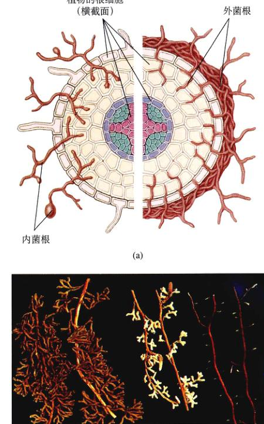图 36.15 内菌根和外菌根 (a) 在内菌根中，真菌菌丝钻入植物根的外周细胞中并产生分发；而在外菌根中，菌丝不钻进根细胞中，而是环绕并在根细胞之间生长、延伸。(b) 松树根上的外菌根。从左到右分别是：Pisolithus 形成的棕黄色菌根、Rhizopagon 形成的白色菌根和无真菌共生的松树根。
(宫强 任晓晓 谢莉萍 译校)